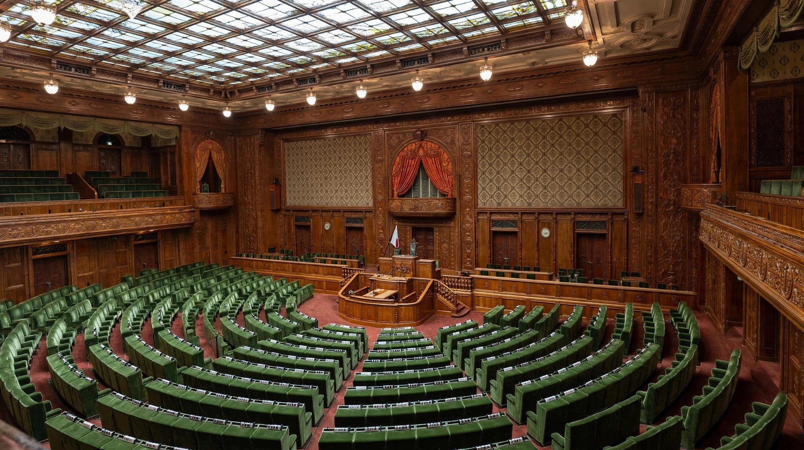

| House of Councillors 参議院 | |
| Type | Upper house of the National Diet |
|---|---|
| Term | 6 years, staggered |
| Seats | 248 |
| Voting system | 148 seats by single non-transferable vote in prefectural districts; 100 by proportional representation in a single nationwide district |
| Meeting place | National Diet Building, Nagatachō, Tokyo |
The House of Councillors (参議院, Sangiin) is the upper house of the National Diet of Japan. It consists of 248 members serving six-year terms, with half of the house elected every three years. Unlike the House of Representatives, it cannot be dissolved, which is intended to give it continuity and independence from short-term political pressure.
The House of Councillors replaced the appointed House of Peers when the Constitution of Japan came into force in 1947. Its size has changed several times: it began with 250 members, was reduced to 242 by reforms in 2001, and was increased to 248 by legislation passed in 2018, which also introduced a special quota frame within the proportional-representation portion.
Of the 248 members, 148 are elected in prefectural districts (some of which are combined into joint districts to reduce vote-value disparities) using the single non-transferable vote, and 100 are elected by proportional representation in one nationwide district. Since 2019, parties may designate certain list candidates as priority winners under the tokutei-waku ("special frame") system. Candidates must be at least 30 years old.
The House of Councillors shares legislative power with the House of Representatives, but it is the weaker chamber. If the two houses disagree on the budget, treaties, or the designation of the Prime Minister, the lower house prevails; ordinary bills can be enacted over its objection by a two-thirds vote in the lower house. While the House of Representatives is dissolved, the House of Councillors may be called into emergency session to take provisional measures, which lapse unless the lower house agrees to them within ten days of its next session. The house also elects its own President, who presides over its plenary sittings.